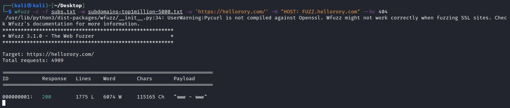

wfuzz (bruteforce)
Github:
https://github.com/xmendez/wfuzzInstallationTo install WFuzz, simply use pip:
To run Wfuzz from a docker image, run:
docker run -v $(pwd)/wordlist:/wordlist/ -it ghcr.io/xmendez/wfuzz wfuzz
wget https://raw.githubusercontent.com/danielmiessler/SecLists/master/Discovery/DNS/subdomains-top1million-5000.txt
wfuzz -c -f subs.txt -w subdomains-top1million-5000.txt -u 'http://example.com' -H "HOST: FUZZ.example.com" --hw [not-match-this-Word-count-number]
-f [filename] → store the output in this file
-c → Output with colors
-w [wordlist] → Specify a wordlist file
-hw [number] → important to eliminate all the results that we are not interested in
wordlists used:
https://github.com/danielmiessler/SecLists/blob/master/Discovery/DNS/subdomains-top1million-5000.txtHiding Responses(source):The following command line parameters can be used to hide certain HTTP responses
• --hc
• --hl
• --hw
• --hh
